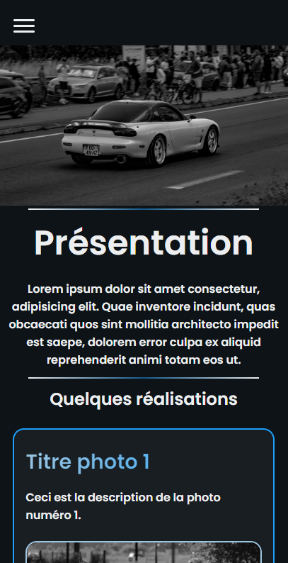

À propos
Je suis Clément, un développeur passionné. J'ai un grand intérêt pour l'informatique depuis mon adolescence et j'ai finalement décidé de faire mes études dans la programmation. J'étudie actuellement à l'Université Polytechnique Hauts-de-France pour ma 3ème année. Mon objectif est de créer des applications web et des solutions logicielles intuitives et efficaces qui apportent une valeur ajoutée à leurs utilisateurs. Je suis toujours à la recherche de nouvelles opportunités de développement et je suis ouvert aux collaborations sur des projets intéressants. Si vous souhaitez discuter de projets ou simplement en savoir plus sur mon parcours, n'hésitez pas à me contacter.

Projets
Portfolio

Réalisation de mon Portfolio


Août 2023
Site web Photographie
Création d'un site web permettant a son utilisateur de présenter ses photos


Décembre 2023 -> ???
Compétences
Mes compétences en HTML me permettent de créer des bases solides et sémantiquement correctes pour les sites web. Je suis habitué à traduire des concepts en éléments visuels en utilisant des balises HTML, tout en veillant à ce que l'accessibilité soit une priorité pour tous les utilisateurs.
Je maîtrise CSS pour donner vie à des designs web captivants et réactifs. Les sélecteurs, les propriétés et les valeurs sont mes outils pour créer des mises en page esthétiques et cohérentes sur diverses plateformes et tailles d'écran. En outre, j'excelle dans l'utilisation des animations et des transitions CSS pour ajouter des éléments interactifs et attrayants aux interfaces utilisateur, améliorant ainsi l'expérience globale des visiteurs.
JavaScript est mon moyen de prédilection pour créer des fonctionnalités web dynamiques et interactives. Je maîtrise les concepts tels que les variables, les fonctions, les boucles et les événements, ce qui me permet de manipuler le DOM et de répondre aux actions des utilisateurs de manière fluide.
En SQL, je suis capable de gérer efficacement les bases de données et d'effectuer des opérations cruciales. Je peux créer des requêtes complexes pour récupérer, filtrer et organiser des données de manière efficace. Ma compréhension des jointures, des sous-requêtes et de l'optimisation des requêtes garantit que les applications que je développe peuvent accéder aux informations nécessaires rapidement et de manière fiable, tout en maintenant l'intégrité des données.

J'utilise Git de manière experte pour gérer efficacement les versions de mes projets, collaborer avec d'autres développeurs et suivre les problèmes et les demandes de fusion. Je maîtrise la gestion du code source et l'utilisation des fonctionnalités de GitHub, ce qui m'aide à maintenir un flux de travail de développement fluide et collaboratif.
J'ai une solide expérience en développement en PHP, un langage de programmation côté serveur largement utilisé. Je peux créer des applications web robustes et performantes en exploitant la capacité de PHP à interagir avec les bases de données et à gérer la logique côté serveur.

Je suis compétent dans le développement d'applications web à l'aide de React, une bibliothèque JavaScript populaire pour la création d'interfaces utilisateur interactives. Je crée des composants React réutilisables et je gère l'état de l'application pour construire des applications réactives et évolutives.

Ma maîtrise de Java, un langage de programmation polyvalent, me permet de développer des applications robustes et performantes, qu'il s'agisse d'applications de bureau, d'applications web ou d'applications mobiles. Je suis à l'aise avec les concepts de base de Java, tels que les classes, les objets, les collections et la gestion de la mémoire, ce qui me permet de créer des solutions logicielles de haute qualité.